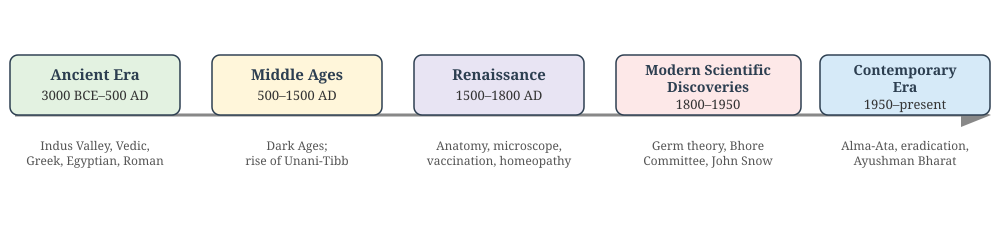
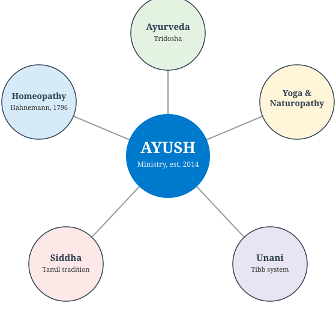
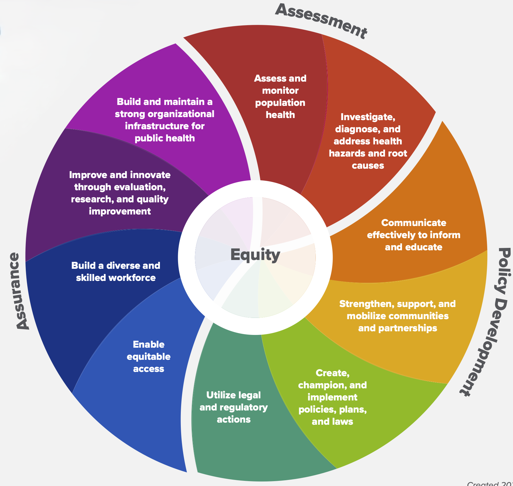
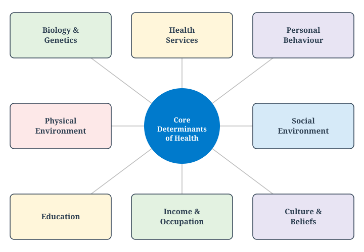
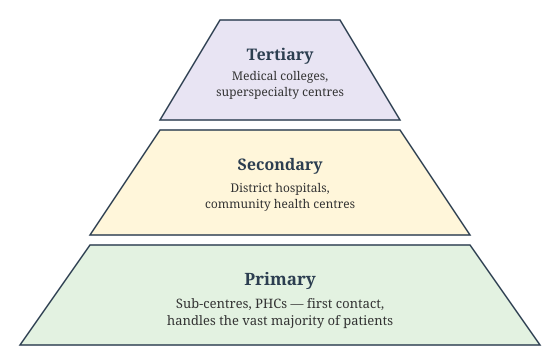
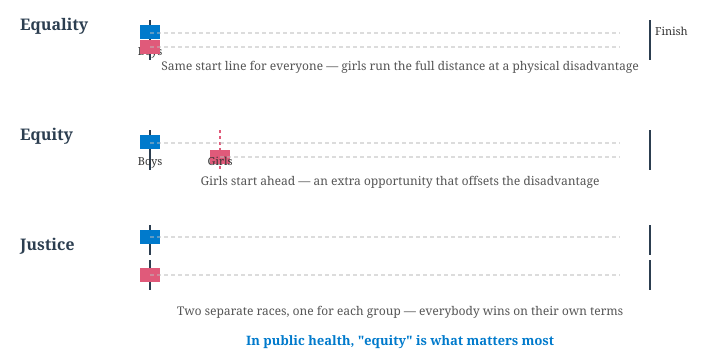
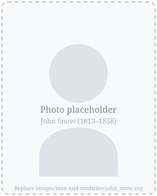

Community medicine, Preventive medicine, social medicine and family medicine
Define health and describe its dimensions and the health–disease spectrum
Explain the major determinants of health using an accepted health-field model
State the Alma-Ata Declaration’s definition of Primary Health Care and its goal
Trace the evolution of medicine from curative to community medicine
Describe the Bhore Committee’s role in shaping India’s health system
Locate “Health for All” within the later MDG → SDG trajectory
How to read this deck: each slide is tagged and color-coded — 🟢 MUST KNOW (core, exam-critical), 🟡 SHOULD KNOW (important context), 🟣 MAY KNOW (enrichment), and 🧡 QUESTION (self-check).
Richest of Rich countries cannot afford to keep on building hospitals ignoring the factors leading to increase in diseases and early deaths.
Evolution and Scope of Community Medicine
🟢 MUST KNOW
Community Medicine broadens the scope of medicine from the individual to the community.
It integrates preventive, promotive, curative, and rehabilitative services through organized efforts.
Core idea: Health is achieved not only by treating disease but by improving living conditions, sanitation, nutrition, and education.
Hygiene, Preventive, and Social Medicine
🟡 SHOULD KNOW
Field
Focus
Example
Hygiene
Personal and environmental cleanliness
Hand‑washing, safe water
Preventive Medicine
Preventing disease before it occurs
Immunization, screening
Social Medicine
Studying social causes of disease
Poverty, housing, education
Community Medicine
Applying all these at population level
National health programs
Key link: Preventive medicine acts at the individual level; social medicine acts at the societal level; community medicine integrates both.
Public Health: Definition and Functions
🟢 MUST KNOW
“The science and art of preventing disease, prolonging life, and promoting physical health and efficiency through organized community efforts for the sanitation of the environment, the control of community infections, the education of the individual in principles of personal hygiene, the organization of medical and nursing services for early diagnosis and preventive treatment of disease, and the development of social machinery which will ensure every individual a standard of living adequate for the maintenance of health.” — C.E.A. Winslow, 1920
Functions: - Health promotion through education
- Disease prevention via immunization
- Health restoration through medical care
- Rehabilitation of the handicapped
Aim: Create conditions for good health — aligning with WHO’s 1948 definition.
Difference Between Community Medicine, Family Medicine, Preventive Medicine, and Social Medicine
🟢 MUST KNOW
Aspect
Community Medicine
Family Medicine
Preventive Medicine
Social Medicine
Unit of focus
Community/population
Family & individual across lifespan
Individual risk factors
Society & social determinants
Scope
Epidemiology, health programs, PHC, public health
Continuity of care, holistic family-centered practice
Immunization, screening, prophylaxis
Links health with social, economic, cultural context
Approach
Population-based interventions
Person-centered, longitudinal care
Disease prevention before onset
Understanding social causes of disease
Examples
National immunization program, sanitation drives
Managing diabetes in a family context
Vaccination, health check-ups
Studying impact of poverty on TB outcomes
Preventive vs Social Medicine
🟡 SHOULD KNOW
Preventive Medicine
Focuses on stopping disease before it occurs.
Tools: vaccination, screening, prophylactic drugs, health education.
Example: Polio immunization campaign.
Social Medicine
Recognizes that disease has social roots (poverty, housing, education, occupation).
Tools: policy advocacy, social reforms, addressing inequities.
Example: Improving living conditions to reduce tuberculosis incidence.
Key difference: Preventive medicine acts at the individual level to stop disease; social medicine acts at the societal level to address causes behind causes.
Community Medicine vs Family Medicine
🟡 SHOULD KNOW
Community Medicine
Concerned with the health of populations.
Uses epidemiology, biostatistics, and health programs.
Example: Designing a malaria control program for a district.
Family Medicine
Concerned with the health of individuals within the family unit.
Provides continuous, comprehensive, and holistic care.
Example: Managing hypertension, diabetes, and mental health in one family across generations.
Key difference: Community medicine is population-focused, family medicine is person-focused but within family context.
Community Diagnosis
🟡 SHOULD KNOW
Aspect
Clinical Diagnosis
Community Diagnosis
Made by
Doctor
Epidemiologist
Concerned with
Individual
Defined population
Scope
Only sick
Both sick and healthy
Purpose
Decide treatment
Plan prevention and promotion
Follow-up
Case
Program
Stages: Data collection and analysis → Interpretation → Dissemination → Action
Relevance: Identifies community health problems, sets priorities, and guides interventions.
Community Diagnosis: Steps and Parameters
🟡 SHOULD KNOW
How a community diagnosis is made (same logic as diagnosing a patient — history, examination, tests — applied to a population):
Collect socio-demographic data (age, sex, education, occupation, income)
Collect environmental data (housing, water, sanitation)
Identify mortality/morbidity causes and risk factors
Distinguish professionally identified needs from felt needs
Write the findings as a short “community diagnosis” statement, then plan community treatment
Parameters used to assess a health service for that community: Relevance, Adequacy, Accessibility, Availability, Affordability, Completeness.
Community vs Hospital Medicine
🟡 SHOULD KNOW
Aspect
Community Medicine
Hospital Medicine
Service area
Defined population
Ill-defined catchment
Approach
Active outreach
Passive, patient-driven
Focus
Prevention and promotion
Curative care
Coordination
Intersectoral
Limited
Cost-benefit
High (population impact)
Individual outcome
Principle: Prevention is safer, cheaper, and easier than cure.
Social Anatomy, Physiology, Pathology, and Therapy
🟣 MAY KNOW
Concept
Analogy
Example
Social Anatomy
Structure of society
Social stratification, institutions
Social Physiology
Functions of society
Education, communication
Social Pathology
Abnormalities
Crime, poverty, delinquency
Social Therapy
Treatment
Legislation, reform, welfare services
Five Eras of Medical History
🟡 SHOULD KNOW
The history of medicine and public health is conventionally divided into five eras:

Five eras of medical and public health history
Ancient Era: Indian and World Medicine
🟡 SHOULD KNOW
Indus Valley (3000–1500 BC): well-planned townships with house drains, public drains, and water-storage tanks — public health thinking existed before it was named
Ayurveda: laid down in the Atharvaveda; health = balance of three doshas — Vata (air), Pitta (bile), Kapha (phlegm). Key sages: Atreya (teacher, 8th–9th c. BCE), Sushruta (surgery, Sushruta Samhita), Charaka (Charaka Samhita, medicine and drugs)
Greek medicine — Hippocrates (c. 460–370 BCE), the father of medicine: the Hippocratic Oath; four humors (blood, phlegm, black bile, yellow bile); On Airs, Waters and Places — arguably the first work of epidemiology
Egyptian: Imhotep; medical knowledge recorded in Papyrus texts (surgery; drugs and pharmacopeia)
Roman: public baths, drainage against malaria, the first census; Galen (129–200 AD), leading anatomist, whose theories held sway for ~1500 years
Middle Ages and the Renaissance
🟣 MAY KNOW
Middle Ages (500–1500 AD) — the “Dark Ages”: wars, famine, and epidemics (the Black Death); little progress in medicine, except the rise of the Arabic/Unani-Tibb system, blending Greco-Roman ideas — Avicenna (Cannons of Avicenna) and Rhazes (measles) are its most famous physicians
Renaissance (1500–1800 AD):
Paracelsus — championed evidence over superstition
Vesalius — systematic human dissection (Fabrica)
William Harvey — circulation of blood; Leeuwenhoek (1679) — the microscope
Edward Jenner (1796) — smallpox vaccination
Samuel Hahnemann (1796) — founded homeopathy on “like cures like”
John Graunt (1662) — numerical analysis of mortality, founder of biostatistics
Era of Modern Scientific Discoveries (1800–1950)
🟡 SHOULD KNOW
Germ theory and its consequences: Koch (TB, cholera, anthrax bacilli), Lister (antisepsis), Pasteur (anti-rabies), Hansen (leprosy bacillus) — followed by X-rays (Roentgen, 1897), BCG vaccine (1920), penicillin (Fleming, 1940), streptomycin (1949).
In India: the Indian Medical Services; malaria’s mode of transmission discovered by Ronald Ross (Nobel Prize); the Bhore Committee (1946, covered in detail later in this deck); Dr. Sushila Nayyar and Dr. Bidhan Chandra Roy as pioneers of modern Indian health-care (also covered later).
In the world: Edwin Chadwick’s UK sanitary report (1842) → first British Public Health Act (1848); Lemuel Shattuck’s US public-health reforms; John Snow’s cholera investigation (covered in detail later in this deck); William Farr (epidemiological surveillance); William Budd (typhoid, water contamination).
Indigenous Systems of Medicine: AYUSH
🟡 SHOULD KNOW
Alongside allopathy, India officially recognizes five indigenous systems of medicine, brought under one umbrella by the Ministry of AYUSH (established 2014):

The five systems under AYUSH
Ayurveda, Yoga, and Naturopathy
🟡 SHOULD KNOW
Ayurveda — laid down in the Atharvaveda; health depends on the balance of three doshas: Vata (air), Pitta (bile), Kapha (phlegm/mucus); foundational texts include the Charaka Samhita and Sushruta Samhita
Yoga — a physical, mental, and spiritual discipline used for health promotion, stress management, and disease prevention
Naturopathy — a drug-free system based on the body’s own capacity to heal, using diet, water, and lifestyle measures
Unani and Siddha
🟣 MAY KNOW
Unani (Unani-Tibb) — a Greco-Arabic system that reached India via the medieval Arabic system of medicine; based on a humoral theory similar to ancient Greek medicine; its classical authorities include Avicenna and Rhazes
Siddha — one of the oldest systems of medicine, rooted in Tamil Nadu and associated with the Siddhars; shares conceptual ground with Ayurveda but has its own distinct pharmacopeia and texts
Homeopathy
🟣 MAY KNOW
Founded by Samuel Hahnemann in 1796, in Germany
Core doctrine: “like cures like” — a substance that causes symptoms in a healthy person can, in a highly diluted form, treat similar symptoms in a sick person
Widely practiced in India as one of the recognized AYUSH systems
AYUSH in Public Health: Role and Limitations
🟡 SHOULD KNOW
Where AYUSH fits well: wellness and preventive health services, lifestyle counseling, and supportive/complementary care in select chronic conditions — not as a substitute for intensive care, surgery, or emergency resuscitation.
Key limitations: - Standardization and quality control of herbal/traditional preparations - Safety and drug-interaction data are often incomplete - Evidence base is uneven across the different systems - “Natural” does not automatically mean “safe” — natural substances can still be toxic or interact with other medicines
Essential Public health services
🟢 MUST KNOW

Essential Public Health Services wheel
Monitor health
Diagnose and investigate
Inform, educate, empower
Mobilize community partnerships
Develop policies
Enforce laws
Link to/provide care
Assure competent workforce
Evaluate
Research for new insights
What Is Health?
🟢 MUST KNOW
WHO Constitution (1948):
“Health is a state of complete physical, mental and social well-being and not merely the absence of disease or infirmity.”
This definition has never been formally amended. Two things make it radical for its time:
It rejects the purely biomedical view (health = absence of disease)
It names three dimensions at once — physical, mental, social — as jointly necessary
Dimensions of Health
🟢 MUST KNOW
Commonly taught dimensions:
Physical — normal structure and function of the body
Mental — a state of balance with oneself and one’s environment
Social — harmony with the social fabric: family, community, work
Spiritual — a sense of purpose, values, or belief
Emotional — the ability to recognize and appropriately express feelings
Why this matters:
A person can be free of diagnosable disease and still not be “healthy” by this definition — e.g. someone who is physically fit but socially isolated or under chronic mental distress.
The Health–Disease Spectrum
🟢 MUST KNOW
Health is not a fixed state but a continuum, moving in both directions:
Death → Chronic illness → Disability → Mild sickness → No obvious illness → Positive health
Positive health is more than “not sick” — it implies resilience and a reserve capacity to cope with physical, biological, and social stress
Any individual can move along this spectrum over time; public health aims to shift populations toward the positive-health end, not just treat people once they’ve crossed into illness
Determinants of Health
🟢 MUST KNOW
A widely used health-field model groups the determinants of health into four domains:
Domain
Examples
Environment
safe water, sanitation, housing, air quality, occupational hazards
Heredity / Biology
genetic makeup, age, sex, inherited susceptibility to disease
Lifestyle / Behaviour
diet, physical activity, tobacco/alcohol use, personal hygiene
Health services
access, affordability, and quality of preventive and curative care
Key implication: health care services are only one of four determinants — and historically not the largest one. Improving population health depends at least as much on environment, behaviour, and social conditions as on hospitals and doctors.
Determinants of Health: A Wider View
🟣 MAY KNOW
The four-domain model on the previous slide is the core teaching; textbooks also break determinants into a wider set of interacting domains:

Core determinants of health
Primary Health Care: Alma-Ata, 1978
🟢 MUST KNOW
At Alma-Ata (in present-day Kazakhstan), 134 WHO member states and 67 organisations adopted a declaration defining Primary Health Care (PHC):
“Essential health care based on practical, scientifically sound and socially acceptable methods and technology, made universally accessible to individuals and families… through their full participation and at a cost the community and country can afford… the first level of contact of individuals, the family and community with the national health system.”
The goal it set:“Health for All by the year 2000” — a level of health that would let all people lead a socially and economically productive life, with PHC declared the key strategy to reach it.
Levels of Healthcare: Primary, Secondary, Tertiary
🟢 MUST KNOW
Health-care is delivered through a graded, three-tier system — most needs are met at the base, with progressively fewer patients needing the more specialized tiers above:

The three-tier health-care pyramid
Principles of Primary Health Care
🟢 MUST KNOW
Equitable distribution — care reaches rural and underserved populations, not just cities
Community participation — individuals and communities help plan and run their own care, not just receive it
Intersectoral coordination — health links to agriculture, education, housing, water supply, and rural development
Appropriate technology — methods that are scientifically valid, affordable, and acceptable to the community, not merely the most advanced available
Equality, Equity, and Justice
🟡 SHOULD KNOW
These three terms are often confused, but public health cares most about equity:

Equality, equity, and justice illustrated as a race
Example: Ayushman Bharat gives free secondary/tertiary care specifically to the poorest households — the whole population has access to care, but the most disadvantaged get an extra opportunity. That is equity, not mere equality.
Evolution of Medicine
🟡 SHOULD KNOW
Medicine’s scope has widened in stages:
Curative medicine — treating disease in the individual patient
Preventive medicine — stopping disease before it starts (e.g. immunization, screening)
Social medicine — recognizing that disease has social causes and consequences, not only biological ones
Community medicine / Public health — shifting the unit of concern from the individual patient to the community as a whole
Each stage didn’t replace the one before it — modern health systems practice all four simultaneously, for different needs.
The Bhore Committee (1946)
🟡 SHOULD KNOW
The Health Survey and Development Committee, chaired by Sir Joseph Bhore, was appointed by the colonial government in 1943 and reported in 1946. It remains the foundational blueprint for independent India’s health system.
Key recommendations:
Integrate preventive and curative services at every administrative level, instead of running them separately
Establish Primary Health Centres — short-term target of one PHC per 40,000 population
Strengthen maternal and child health services
Reorient medical education toward training “social physicians” — doctors trained in preventive and social medicine, not curative care alone
Raise health spending to at least 15% of government expenditure
Many of these ideas — the PHC network, integration of services — are still the structural basis of India’s public health system today.
Pioneers of Modern Indian Public Health
🟣 MAY KNOW
Alongside Sir Joseph Bhore, two other figures shaped modern Indian health-care:
Dr. Sushila Nayyar — founded a small dispensary at Sewagram (Wardha) in 1944 that grew into the Mahatma Gandhi Institute of Medical Sciences, known for its focus on holistic rural health-care; later became India’s second Union Health Minister
Dr. Bidhan Chandra Roy — first doctor to become Chief Minister of an Indian state (West Bengal); his birthday, 1 July, is celebrated nationally as “Doctors’ Day”
From Health for All to the SDGs
🟡 SHOULD KNOW
“Health for All by 2000” was not fully achieved by its target year, but it set a template that later global goals built on:
2000–2015: Millennium Development Goals (MDGs) — several goals (child mortality, maternal health, HIV/malaria/TB) were direct descendants of the Health for All agenda
2015–2030: Sustainable Development Goals (SDGs) — health consolidated under SDG 3: Good Health and Well-being, with Universal Health Coverage (UHC) as an explicit target
In 1998, WHO adopted 10 concrete global targets to pursue Health for All in the new century. A few of the most exam-relevant:
Survival: maternal mortality <100/100,000 live births; under-5 mortality <45/1000 live births; life expectancy >70 years
Reversal of five major pandemics: TB, HIV/AIDS, malaria, tobacco-related disease, violence/trauma
Eradication/elimination of specific diseases: measles and lymphatic filariasis (eradication); leprosy and trachoma (elimination)
Improved access to water, sanitation, food, and shelter
India’s National Health Policy Milestones
🟡 SHOULD KNOW
NHP 1983 — first National Health Policy; reaffirmed Health for All through a PHC-centred approach
NHP 2002 — revised targets in light of slower-than-planned progress; emphasized decentralization and public–private partnership
NHP 2017 — shifted emphasis toward Universal Health Coverage, preventive and promotive care, and raising public health spending as a share of GDP
John Snow: Father of Epidemiology
🟣 MAY KNOW

John Snow (1813–1858)
English physician who traced London’s 1854 cholera outbreak in Soho to a single contaminated water source
Plotted cases on a spot map centred on the Broad Street pump, showing deaths clustering around it
Convinced local authorities to remove the pump handle, ending the outbreak — decades before germ theory explained why it worked
Showed that disease could be tracked and controlled through systematic observation and mapping, not just laboratory science
Widely regarded as the founding figure of modern epidemiology and disease mapping
Contemporary Era: 1950 to the Present
🟡 SHOULD KNOW
1949–1950: the Framingham cohort study (heart disease risk factors); Doll and Hill’s case-control studies (smoking and lung cancer) — landmark study designs
1978: the Alma-Ata Declaration (covered in detail later in this deck)
1980: smallpox declared eradicated worldwide — the first disease ever eradicated
Continuing challenges: HIV/AIDS emerged soon after; recurring outbreaks (SARS, H1N1, Nipah); COVID-19 (2019–) — the largest global public-health event of this era
In India: community development programme (1952); world’s first national family planning programme (1953); last case of smallpox (1975) and of wild polio (2011); National Rural Health Mission (2005); Ayushman Bharat (2018)
Public Health Success and Failure Stories
🟣 MAY KNOW
Successes — smallpox and polio eradication, leprosy control, and HIV/AIDS control all shared the same ingredients: strong political will, effective surveillance, community education, an effective intervention (vaccine/drug), and international cooperation.
A cautionary failure — malaria: incidence fell from 75 million cases/year (1947) to just 0.1 million (1965) — then resurged to over 6 million/year by 1976. Why: surveillance was relaxed once cases looked “eradicated,” over-reliance on a single tool (DDT spraying), and low investment once the disease seemed under control.
Lesson: a falling case count is a reason to sustain surveillance, not relax it.
The Social Gradient of Health
🟣 MAY KNOW
Health outcomes follow a gradient across socioeconomic position, not just a gap between “poor” and “rich”: at every step up the social ladder, average health tends to improve. This is associated with the work of Michael Marmot and the WHO Commission on Social Determinants of Health.
Implication: improving population health requires acting on the “causes of the causes” — income, education, working conditions — not only on medical risk factors.
WHO: A Brief Note on Structure
🟣 MAY KNOW
Founded 1948, headquartered in Geneva, Switzerland
Governed by the World Health Assembly (all member states), which sets policy and elects the Director-General
Operates through six regional offices (India falls under WHO-SEARO, the South-East Asia Regional Office)
Self-Check: Question 1
🧡 QUESTION
Question 1
According to the WHO Constitution, health is a state of complete physical, mental, and social well-being and:
A state achieved only after recovering from an illness
Not merely the absence of disease or infirmity
The same as having access to good hospitals
A purely subjective, unmeasurable feeling
Self-Check: Question 2
🧡 QUESTION
Question 2
In the health-field / determinants-of-health model used in this chapter, which of the following is one of the four domains?
Political ideology
Heredity / biology
Climate change policy
International trade
Self-Check: Question 3
🧡 QUESTION
Question 3
The Alma-Ata Declaration (1978) set which goal?
Eradication of all communicable disease by 1990
Health for All by the year 2000, through Primary Health Care
Universal vaccination coverage by 1985
A single global health insurance scheme
Self-Check: Question 4
🧡 QUESTION
Question 4
Which principle of Primary Health Care specifically refers to health linking with sectors like agriculture, education, and water supply?
Appropriate technology
Equitable distribution
Intersectoral coordination
Community participation
Self-Check: Question 5
🧡 QUESTION
Question 5
The Bhore Committee (1946) recommended a short-term target of one Primary Health Centre per how many population?
10,000
40,000
100,000
500,000
Self-Check: Question 6
🧡 QUESTION
Question 6
Which stage in the evolution of medicine shifts the unit of concern from the individual patient to the community as a whole?
Curative medicine
Preventive medicine
Social medicine
Community medicine / Public health
Self-Check: Question 7
🧡 QUESTION
Question 7
Under the Sustainable Development Goals, health is primarily consolidated under which goal?
SDG 1 (No Poverty)
SDG 3 (Good Health and Well-being)
SDG 6 (Clean Water and Sanitation)
SDG 13 (Climate Action)
Self-Check: Question 8
🧡 QUESTION
Question 8
Community medicine primarily differs from clinical medicine in that it focuses on:
Individual patient care
Hospital-based management
Health of populations
Curative services only
Self-Check: Question 9
🧡 QUESTION
Question 9
Which of the following best reflects the scope of community medicine?
Diagnosis and treatment
Rehabilitation only
Prevention, promotion, and protection of health
Emergency care
Self-Check: Question 10
🧡 QUESTION
Question 10
The traditional concept of “Tridosha” — Vata, Pitta, and Kapha — is associated with which system of medicine?
Unani
Siddha
Ayurveda
Homeopathy
Self-Check: Question 11
🧡 QUESTION
Question 11
“Like cures like” is the fundamental principle of:
Unani
Yoga
Siddha
Homeopathy
Self-Check: Question 12
🧡 QUESTION
Question 12
A patient develops liver toxicity after taking an unlabeled herbal preparation of unclear dosage. This best illustrates which limitation of AYUSH systems?
Lack of trained practitioners
Absence of preventive potential
Issues of standardization and safety
Ineffectiveness in chronic diseases
Self-Check: Application
🧡 QUESTION
Application
Which of the following best describes Community Medicine?
Focuses only on hospital-based curative care
Integrates preventive, promotive, curative, and rehabilitative care
Deals only with sanitation and hygiene
Concerned solely with family-level care
References
World Health Organization. Constitution of the World Health Organization (1948, in force 7 April 1948).
World Health Organization / UNICEF. Declaration of Alma-Ata, International Conference on Primary Health Care, Alma-Ata, USSR, 6–12 September 1978.
Government of India. Report of the Health Survey and Development Committee (Bhore Committee), 1946.
Blum, H.L. Planning for Health: Development and Application of Social Change Theory. Human Sciences Press, 1974.
Lalonde, M. A New Perspective on the Health of Canadians. Government of Canada, 1974.
Marmot, M. & WHO Commission on Social Determinants of Health. Closing the Gap in a Generation, 2008.
Ministry of Health & Family Welfare, Government of India. National Health Policy 1983, 2002, 2017.
Bhalwar, R. (Ed.) Text Book of Community Medicine. Chapters: “Historical Concepts in Community Medicine” and “General Concepts in Health, Community Medicine and Public Health.”
Indian Association of Preventive and Social Medicine (IAPSM), Core Committee. Community Medicine: An Introduction.
Ministry of AYUSH, Government of India. About the Ministry — Ayurveda, Yoga & Naturopathy, Unani, Siddha, and Homeopathy.
Want to practice? See the companion Man and Medicine Question Bank for short-answer, MCQ, and assertion–reason questions with an answer key.
Social Anatomy, Physiology, Pathology, and Therapy
🟣 MAY KNOW